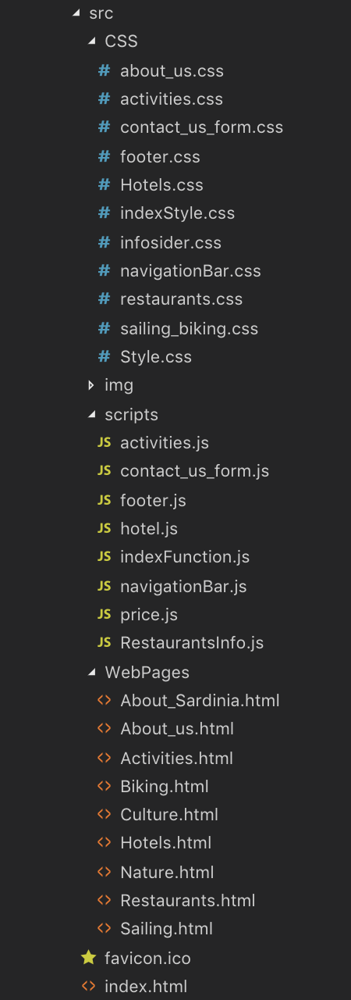

Administative detaljer
Kunde: Visita Sardinia (turistkontor, ikke reell klient).
Link til sidenVi bestemte oss for å endre et par ting fra den originale ideen av siden. Vi endte med å bruke separate CSS-filer for sider uten overlappende design, og har kun det som er felles for alle sidene i Style.css. Dette ble for oss ryddigere og gjorde det lettere å holde oversikt over. Underoverskriftene på alle sidene, med unntak av undersidene til "Activities", ble fjernet, da vi la inn styling på den aktive fanen i navigasjonsbaren i stedet. "Slideshow"-funksjonaliten på restaurant-, hotell-, sykkel- og seilingsiden ble ikke inkludert grunnet mangel på tid.
I index.html ble noen få ting endret:
Det var også andre ting som ble endret noe. Dette har med at designet av siden ikke tok hensyn til responsivitet og posisjonering av enkelte elementer ble derfor annerledes fra det første designet da dette ikke lot seg gjøre brukervennlig med en responsiv side. Med dette følger endringene at "Offers" boksene stilles under hverandre når siden blir for smal.
Samme type endring ble gjort på navigasjonsbaren og footer elementet da disse måtte optimaliseres for mindre skjermer. Dette ble da en helt nye del av designet som først ble lagt til under implementasjonen av siden, da dette ikke ble tatt godt nok høyde for under planleggingen av siden.
For navigasjonsbaren består endringene av at den blir en stor dropdown meny når skjermen blir for liten. Da er også linkene til Sailing, Biking, Nature og Culture fjernet fra navigasjonsbaren i tilfellet hvor skjermen ble for smal, å beholde disse ble lite uoversiktlig, rotete og lite brukervennlig.
Annet enn dette er de eneste endringene på navigasjonsbaren at størelsen ble beskrevet med vh istedenfor pt da dette tar bedre hensyn til ulike oppløsninger på de ulike sidene. Det samme er gjort med teksten på footeren. I tillegg til dette er teksten på navigasjonsbaren likt fordelt istedenfor å være plassert i midten da det i praksik ikke var plass til å sentrere alt.
Når det gjelder footeren ble teksten her (som i navigasjonsbaren) endret til vh istedenfor pt for å ta hensyn til ulike oppløsinger på sidene. I tillegg til denne ble de to ulike delene (den venstre og høyre siden av footeren) plassert over hverandre når skjermen blir smalere/mindre da dette var mer oversiktlig og brukervennlig.
Activities har ikke endt med noen store endringer fra det orginale designet. Dette er fremdeles det samme i veldig stor grad. Eneste ordentlige forskjellen er den responsive delen av siden hvor "activities" boksene endrer possisjon til under hverandre (1x4 -> 2x2) når skjermen blir for smal.
På hotell-, restaurant-, sykkel-, seiling-, om oss- og om Sardinia-siden er skriftstørrelsen på hovedteksten forandret fra 18pt til 13pt. Dette ble gjort da vi innså at 18pt ble alt for stort.
I forhold til den opprinnelige mockupen for hotellsiden har det blitt gjort noen endringer som bør nevnes:
På Sailing og Biking ble designet for det meste oppretthold slik som på mockupet bortsett fra selve utfyllingsskjemaet. Der måtte flere designendringer skje for å gi responsive muligheter på nettsiden. Vi har også lagt til en effekt som lyser rødt når du velger en ugyldig dato (hentedato etter leveringsdato), når du da senere velger en gyldig dato, vil lyset gå fra rødt til grønt for å indikere at valget nå er gyldig. Elementene er plassert slik at de enkelt kan endres dersom brukeren velger å besøke siden på nettbrett eller mobil.
HTML- og JavaScript-filene ble utført som beskrevet i P2. JavaScript-kravene ble fullført på følgende måter: Sander la inn navigasjonsbaren, headeren og footeren på alle sider samt scripts til index.html og activities.html hvor teksten på sidene skaleres etter størrelsen til boksene som inneholder "offers" og "activities", samt teksten og størrelsen til "About us" wrapperen. Hans la inn et JavaScript for booking av hotell, hvor brukeren definerte tidsrom, personer og rom, samt kontaktinformasjon. Dette var målet som ble definert i P2, men det ble også laget en prisutregningsfunksjon som tok inputs fra bookingen, og returnerte prisen for reservasjonen. Denne funksjonen var på mange måter lik Alexey's prisfunksjon, men på grunn av ulik funksjonalitet på de ulike sidene og da ulike input(for eksempel antall personer) gjorde det på flere måter mer praktisk å lage en ny funskjon for hotellsiden. Utvidelse for mer informasjon av hvert hotell ble også kontrollert ved hjelp av JavaScript. Simen la inn Google maps og interaktive piler på restaurantsiden. Alexey la inn felles prisfunskjon for Seiling- og Syklingsiden som i tillegg til prisberegning fyller inn dagens dato og klokkeslett i skjemaet når man går inn på siden. Flere interaktive animasjoner som for eksempel "gyngende" pristall i det en endring skjer, lysende skjema ved feil/riktig dato ble også lagt til ved hjelp av JavaScript. Vilde la inn en bekreftelses pop-up når du har sendt en mail på About us-siden. Se tabellen under for oversikt over hvem som lagde hvilke filer:
| Side | Utført av: |
|---|---|
| Index.html | Sander |
| Hotels.html | Hans |
| Resturants.html | Simen |
| Activites.html | Sander |
| Biking.html | Alexey |
| Sailing.html | Alexey |
| Culture.html | Vilde |
| Nature.html | Vilde |
| AboutSardinia.html | Vilde |
| AboutUs.html | Vilde |
| style.css | Alle |
| About_us.css | Vilde |
| Contact_us_form.css | Vilde |
| infosider.css | Vilde |
| Activities.css | Sander |
| footer.css | Sander |
| IndexStyle.css | Sander |
| NavigationBar.css | Sander |
| Hotels.css | Hans |
| Restaurants.css | Simen |
| sailing_biking.css | Alexey |
| price.js | Alexey |
| activities.js | Sander |
| footer.js | Sander |
| indexFunction.js | Sander |
| navigationBar.js | Sander |
| contact_us_form.js | Vilde |
| hotels.js | Hans |
| RestaurantsInfo.js | Simen |
Noen ekstra JavaScript-filer (Activities.js og indexFunction.js) ble lagt til og skrevet av Sander. Navigasjonsbaren og header-bildet på toppen av siden og footeren ble lagt inn med Javascript siden disse skulle vises på alle sider. Dette ble gjort av Sander.
Oppdatert filstruktur:
